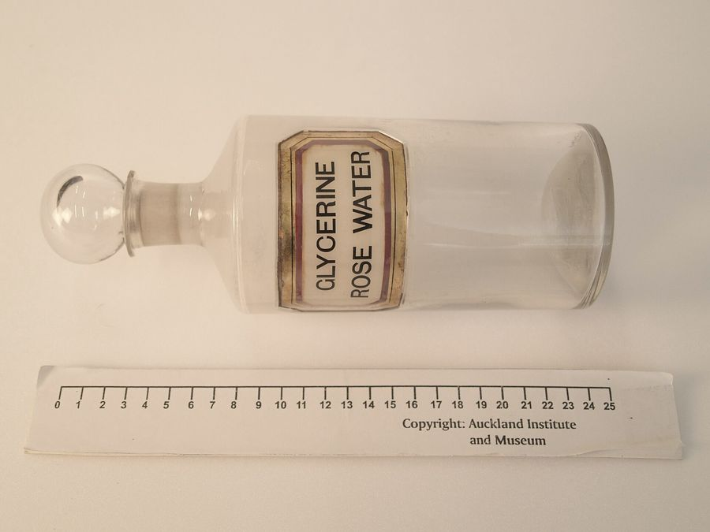

「化粧品」と「医薬部外品」と「医薬品」は、法律のどこで分かれているのか
売り場では同じ棚に並んでいても、法律は三つを別の名前で呼び分けています。分け目は成分ではなく、「何を目的として使われる物か」と「人体に対する作用が緩和かどうか」の二つです。
もとになった資料
- 資料
- 医薬品、医療機器等の品質、有効性及び安全性の確保等に関する法律（昭和三十五年法律第百四十五号）第二条、第六十六条
- 写した日
- 立場
- 体づくり・美容の資格も実務経験もない書き手が、原文を写しています
01 / 08 ことばの線引き

写真：Bottle, apothecary (AM 629318-6).jpg ／ 不明 ／ CC BY 4.0 （Wikimedia Commons）
.jpg){kind=link}
体づくりや美容の売り場では、よく似た形の容器がとなりあって並んでいます。けれども法律の上では、それらは別々の名前で呼び分けられています。
呼び分けの正体は、医薬品医療機器等法という法律の第二条にあります。第一項が医薬品、第二項が医薬部外品、第三項が化粧品を、それぞれ別の文で定義しています。
法律は三つを、別々の文で定義している
まず医薬品です。第二条第一項は三つの号を並べていて、第一号が日本薬局方に収められている物、第二号が疾病の診断・治療・予防に使われる物です。
第三号には「人又は動物の身体の構造又は機能に影響を及ぼすことが目的とされている物」とあります。この号の括弧の中で、医薬部外品と化粧品ははっきり除かれています。
次に医薬部外品です。第二条第二項は「次に掲げる物であつて人体に対する作用が緩和なものをいう」と書き出し、そのあとに使用目的を並べています。
並んでいるのは、吐きけその他の不快感または口臭・体臭の防止、あせも・ただれ等の防止、脱毛の防止・育毛・除毛の三つです。ねずみや蚊などの防除も同じ項の別の号にあります。
同じ項の第三号は、第一項第二号または第三号の目的に使われる物のうち「厚生労働大臣が指定するもの」も医薬部外品だとしています。薬用と名のつく品物の多くは、ここに入ります。
最後に化粧品です。第二条第三項の文は短く、読むとこの区分の性格がそのまま見えてきます。
清潔にする、美化する、魅力を増す、容貌を変える、健やかに保つ。化粧品に許されている目的は、この五つの言い方に収まっています。
分け目は「目的」と「作用の強さ」
三つの定義を並べると、法律が何で線を引いているかが見えてきます。どの条文も、まず「何のために使われる物か」を書き、そのあとで作用の強さに触れています。
医薬品の定義には「作用が緩和」という条件がありません。一方で医薬部外品と化粧品には、どちらにも「人体に対する作用が緩和なもの」という条件が付いています。
つまり法律は、成分の名前で区分を決めているのではありません。その物が何を目的に作られ、体にどのくらい強く働くかで、置かれる箱が変わる仕組みになっています。
同じ成分が入っていても、配合の量や目的の書き方が違えば、区分が変わることがあります。容器に書かれた区分名は、成分表よりも先に読む値打ちがあります。
医薬部外品には、承認を受けた効能効果があります。化粧品のうち承認を要しないものには、そうした個別の承認がありません。
そのかわり化粧品には、使える成分の側からの縛りがあります。平成十二年九月二十九日付けの厚生省告示第331号「化粧品基準」が、その枠を定めています。
この告示は、配合してはならない成分と、配合に上限のある成分を並べる作りになっています。枠の中であれば、処方は製造販売業者の責任で決められます。
第二条の定義には、もう一つ読み落としやすい部分があります。医薬品の第二号と第三号は、いずれも対象を「機械器具等でないもの」に限っています。
機械器具等にあたる物は、同じ条の第四項で医療機器として別に定義されています。美容に使う機器がどちらに入るかは、この分かれ目で決まります。
区分が変わると、書いてよいことも変わる
区分が変わると、広告に書いてよいことも変わります。厚生労働省の医薬品等適正広告基準は、区分ごとに表現の範囲を分けて書いています。
承認を要する物は、承認を受けた効能効果の範囲を超えてはならないとされています。承認を要しない物のうち化粧品については、別の通知に定める範囲を超えてはならないとされています。
その別の通知が、次の記事で扱う「化粧品の効能の範囲」です。化粧品が書いてよい効能は、番号のついた一覧として示されています。
なお第六十六条は区分を問わず、誰であっても、名称・製造方法・効能・効果・性能について虚偽または誇大な記事を広告してはならないと定めています。
同じ条の第二項は、医師その他の者が保証したものと誤解されるおそれがある記事も、第一項に当たるとしています。体験談の見せ方が問われるのは、この条があるためです。
売り場で最初に確かめられるのは、区分名がどこに書いてあるかです。区分が分かれば、その品物に許されている言い方の幅も、だいたい決まります。
医薬品医療機器等法 第2条